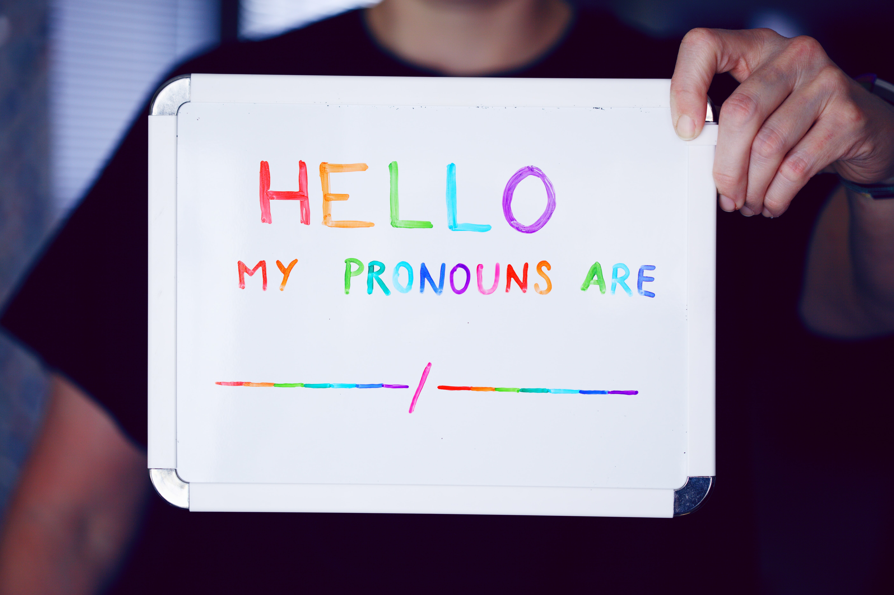

Respecting Pronouns Is The Right Thing To Do
Jan 28 2022

Respecting pronouns is the right thing to do, quite easy, and should not be a debate. Unfortunately, TERFs and anti-LGBT+ people are trying to make it seem that respecting pronouns is incorrect and "woke." Let's look at why there is nothing wrong with respecting pronouns and why it's harmful to not.
First, we should look at how pronouns are used, words are generally defined based on how they are used. In everyday life, pronouns refer to gender, not biological sex. People generally go off looks unless otherwise specified. Gender is not determined by biological sex and transgender people exist, check out the section we wrote on this here. So in this area, the right way to use pronouns is by someone's gender.
Let's also look at the usefulness of respecting pronouns, after all, language is meant to be useful. In this area respecting pronouns is the most useful thing to do compared to using biology. For example, if you with a transgender friend and a few other friends talking to someone, misgendering that person will only confuse you while using the right pronouns would be the most useful thing in the conversation. In the vast majority of cases misgendering someone will cause more confusion than respecting pronouns.
For anyone who still thinks pronouns refer to biology takes into consideration that biology can be blurry. We have written about this before but to recap if biology is your body then changing it changes the biology. This can be done through hormones and surgery. If you think biology is just chromosomes then read this article.
Now let's look at another reason to respect pronouns, not doing so can damage mental health. A survey by The Trevor Project found that kids whose pronouns are not respected by anyone are 2x more likely to attempt suicide than kids whose pronouns were respected by everyone. Even if you don't believe pronouns are valid you should use them because not using them will have a negative effect. Also, remember that respecting pronouns is easy and only costs a word.
https://www.thetrevorproject.org/survey-2021/?section=SupportingTransgenderNonbinaryYouth